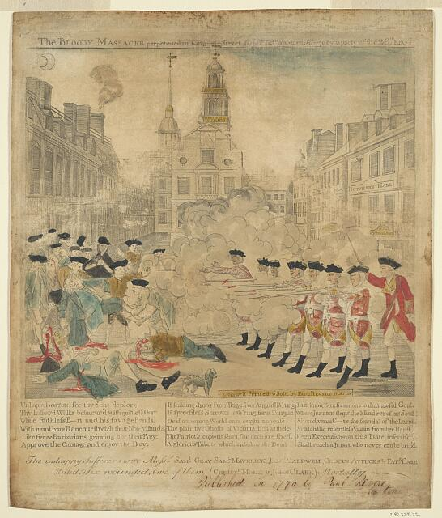

Directions: Work through the five stations in order. Each station holds one record of the quarrel over taxation: the Stamp Act Congress speaking for nine colonies in 1765, Parliament answering in the Declaratory Act of 1766, John Dickinson answering the Townshend Acts in 1767, two opposed accounts of the night of March 5, 1770, and the engraving that fixed that night in colonial memory. For each record, state the claim it makes about who may tax and who may judge. At the end, judge which document best explains why repeal in 1766 did not end the quarrel.
Source: Declaration of Rights and Grievances of the Stamp Act Congress, October 19, 1765, Avalon Project, Yale Law School. The Congress met at New York with delegates from nine colonies. Cuts are marked with ellipses.
That it is inseparably essential to the freedom of a people, and the undoubted right of Englishmen, that no taxes be imposed on them, but with their own consent, given personally, or by their representatives. ... That the people of these colonies are not, and from their local circumstances cannot be, represented in the House of Commons in Great-Britain. ... That the only representatives of the people of these colonies, are persons chosen therein by themselves, and that no taxes ever have been, or can be constitutionally imposed on them, but by their respective legislatures. ... That trial by jury is the inherent and invaluable right of every British subject in these colonies.
State the claim this declaration makes about who may tax the colonies, in the declaration's own words, and name the body it says alone holds that power.
The declaration also claims trial by jury as a right. Why would a congress protesting a tax include a claim about courts in the same document?
Source: The Declaratory Act, March 18, 1766, Avalon Project, Yale Law School. Parliament passed this act on the same day it repealed the Stamp Act. Cuts are marked with ellipses.
That the said colonies and plantations in America have been, are, and of right ought to be, subordinate unto, and dependent upon the imperial crown and parliament of Great Britain; and that the King's majesty, by and with the advice and consent of the lords spiritual and temporal, and commons of Great Britain, in parliament assembled, had, hath, and of right ought to have, full power and authority to make laws and statutes of sufficient force and validity to bind the colonies and people of America, subjects of the crown of Great Britain, in all cases whatsoever ... And be it further declared ... That all resolutions, votes, orders, and proceedings, in any of the said colonies or plantations, whereby the power and authority of the parliament of Great Britain, to make laws and statutes as aforesaid, is denied, or drawn into question, are, and are hereby declared to be, utterly null and void to all intents and purposes whatsoever.
State the claim this act makes about Parliament's power over the colonies, quoting the closing phrase of the first passage, and state what the act does to colonial resolutions that deny that power.
Set this act beside Station 1. Name the single point on which the two documents directly contradict each other.
Source: John Dickinson, Letters from a Farmer in Pennsylvania, Letter II, 1767, Wikisource transcription of the collected edition of 1768. Dickinson wrote twelve letters, printed in colonial newspapers, answering the Townshend Acts. Cuts are marked with ellipses.
Here we may observe an authority expressly claimed and exerted to impose duties on these colonies; not for the regulation of trade; not for the preservation or promotion of a mutually beneficial intercourse between the several constituent parts of the empire, heretofore the sole objects of parliamentary institutions; but for the single purpose of levying money upon us. This I call an innovation; and a most dangerous innovation. ... These colonies require many things for their use, which the laws of Great-Britain prohibit them from getting any where but from her. Such are paper and glass.
Dickinson grants that Parliament may impose duties for one purpose and denies it may impose them for another. Name both purposes in his words.
The Townshend duties were taxes on imports, paid at the port, where the Stamp Act had taxed paper used inside the colonies. Explain why Dickinson treats that difference in form as no difference in the claim being made.
Source: Capt. Thomas Preston, Captain Preston's Account of the Boston Massacre, 1770 (Public Advertiser, London, April 28, 1770; via the Gilder Lehrman Institute), and Samuel Drowne, testimony of March 16, 1770 (from A Short Narrative of the Horrid Massacre in Boston, 1770; original at the Massachusetts Historical Society; spelling modernized), both as carried in the audited TPSP records. Cuts are marked with ellipses.
Preston. The Mob still increased, and were more outrageous, striking their Clubs or Bludgeons one against another, and calling out, "come on you Rascals, you bloody Backs, you Lobster Scoundrels; fire if you dare, G-d damn you, fire and be damn'd; we know you dare not;" ... At this Time I was between the Soldiers and the Mob, parleying with, and endeavouring all in my Power to persuade them to retire peaceably; but to no Purpose. ... On my asking the Soldiers why they fired without Orders, they said they heard the Word "Fire," and supposed it came from me. ... I assured the Men that I gave no such Order, that my Words were, "Don't fire, stop your Firing:"
Drowne. ... those who did remain being mostly sailors and other persons meanly dressed, called out to the armed soldiers and dared them to fire, upon which the deponent heard Capt. Preston say to the soldiers, "Damn your bloods! why don't you fire?" The soldiers not regarding those words of their captain, he immediately said, "Fire." Upon which they fired irregularly, pointing their guns variously in a part of a circle as they stood ...
State the one fact the two accounts dispute directly, quoting the line from each account that carries the dispute.
Each writer had a reason to be believed and a reason to be doubted. State one of each for Preston, using where he wrote from and who printed his account.
Source: Paul Revere (after Henry Pelham), The Bloody Massacre in King-Street, 1770 (Library of Congress), as described in the audited TPSP record. Revere engraved, printed, and sold the print in Boston within weeks of the shooting.

The audited record describes the image in these terms. A hand colored engraving showing a line of British soldiers in red coats firing their muskets into a crowd of colonists. Smoke fills the air, several colonists lie dead or wounded on the ground, and buildings including one labeled "Butcher's Hall" stand behind the crowd. A small dog stands in the foreground. The print title calls the shooting a massacre perpetrated in King Street, and its imprint reads, "Engrav'd Printed & Sold by Paul Revere Boston."
Name two choices the engraver made in picturing the shooting, and state what each choice asks a colonial viewer to conclude about who may judge the soldiers.
Set the engraving beside Station 4. Name one thing the picture shows as settled that the two written accounts leave in dispute.
Build the ledger from the five stations. For each record, state the claim it makes about who may tax and who may judge, in one sentence grounded in the station.
| Record | Its claim about who may tax and who may judge |
|---|---|
| Stamp Act Congress, 1765 | |
| Declaratory Act, 1766 | |
| Dickinson, Letter II, 1767 | |
| Preston and Drowne, 1770 | |
| Revere engraving, 1770 |
Close the file with a verdict. Judge which document best explains why repeal in 1766 did not end the quarrel, and defend your choice against the strongest rival document in the file. Use evidence from at least two stations.
State the claim about who may tax, and the body that alone holds the power. No taxes may be imposed on the colonists but with their own consent, given personally or by their representatives, and the only representatives of the people of these colonies are persons chosen therein by themselves, so no taxes ever have been, or can be constitutionally imposed on them, but by their respective legislatures. The power sits with the colonial assemblies alone.
Why does a tax protest claim trial by jury? Because the Stamp Act and the acts around it sent tax cases to admiralty courts, where judges sat without juries, and extended those courts beyond their ancient limits. A tax enforced by a court the taxed people do not sit in raises the second half of the file question: who may judge. The Congress claimed both halves at once, taxation by the assemblies and judgment by juries of British subjects.
State the claim, and what the act does to denying resolutions. Parliament claims full power and authority to make laws and statutes binding the colonies and people of America in all cases whatsoever. Colonial resolutions, votes, orders, and proceedings that deny or question that power are declared utterly null and void to all intents and purposes whatsoever.
Name the point of direct contradiction with Station 1. The reach of Parliament power over colonial taxation. The Congress held that taxes could be imposed only by the colonial legislatures. The act holds that Parliament may bind the colonies in all cases whatsoever, taxation included, and voids any colonial act that says otherwise. One document limits the power to the assemblies; the other removes the limit and annuls the limiting claim itself.
Name the two purposes in his words. Duties for the regulation of trade, and for the preservation or promotion of a mutually beneficial intercourse between the parts of the empire, are granted. Duties imposed for the single purpose of levying money upon us are denied. The first kind regulates commerce; the second kind raises revenue, and revenue is the line.
Why is the difference in form no difference in claim? Because the colonies were required by British law to buy goods such as paper and glass from Britain alone. A duty on those goods, wherever it was collected, had to be paid by the colonial buyer, and it raised the same money for the same royal purposes as the stamp tax had. The Dickinson test is purpose, not place of collection. If the purpose is revenue, the duty is a tax, and under the Station 1 claim only the assemblies may lay it.
State the disputed fact, with a line from each account. Whether Captain Preston ordered his men to fire. Preston: I assured the Men that I gave no such Order, that my Words were, "Don't fire, stop your Firing." Drowne: the deponent heard Capt. Preston say to the soldiers, "Damn your bloods! why don't you fire?" and then, "Fire." One swears the order was never given; the other swears he heard it given twice over.
Give a reason to believe Preston and a reason to doubt him. To believe: he was the officer on the spot, standing between the soldiers and the mob in his own account, and his claim that the men fired after hearing the word fire shouted by the crowd fits the confusion both accounts describe. To doubt: he wrote from jail, under arrest for murder, and sent the account to London, where it appeared in the Public Advertiser on April 28, 1770, addressed to the English readers and officials who would judge his case. A man writing for his life to his judges has reason to place himself between the crowd and the guns and the order nowhere near his mouth. Drowne carries the mirror problem: sworn testimony, gathered by a Boston town committee that published ninety six depositions to shape how London judged the event.
Name two engraver choices, and what each asks the viewer to conclude. The soldiers are drawn in a disciplined line, firing together on command, which asks the viewer to conclude the shooting was ordered and deliberate rather than panicked. The colonists are drawn unarmed and falling, with the dead in the foreground, which asks the viewer to conclude the crowd was a victim and not a threat. The building behind the crowd is labeled "Butcher's Hall," a name that assigns the verdict before any trial. The title itself, The Bloody Massacre perpetrated in King-Street, names the crime in the picture frame. Any two, each tied to its inference, earn full credit.
Name one thing the picture settles that the accounts dispute. Whether the firing was an ordered act of the soldiers as a body. The engraving shows a line firing in order under an officer with a raised sword, a settled picture of command. Preston and Drowne dispute exactly that point, the order itself, and the trial record disputed it as well. The picture answers in advance the question a Boston jury would spend the fall of 1770 deciding.
The Stamp Act Congress claims taxation for the colonial legislatures alone and judgment by jury for British subjects in the colonies. The Declaratory Act claims lawmaking for Parliament in all cases whatsoever and voids colonial acts that deny the claim. Dickinson claims that a duty laid to raise revenue is a tax in any form, so the Townshend duties fall under the Congress claim and outside Parliament's right. Preston and Drowne dispute who may judge the night of March 5 in the most basic sense: whether an officer ordered a killing is the fact on which a murder trial, and public judgment of the army in Boston, both turned. The Revere engraving claims the judgment for the Patriot public in advance, fixing massacre as the name and the ordered line as the picture of the event. Closing verdicts earn full credit when the document chosen is defended against a named rival. The strongest cases are usually made for the Declaratory Act, argued from its own words: repeal removed one tax while the act asserted the unlimited claim and annulled its denial, so every later revenue measure, the Townshend duties first, reopened the quarrel on the same ground; and for Dickinson's Letter II, argued from the test it supplied, which let colonists recognize the Townshend duties as the Stamp Act claim in a new form. A case for the Stamp Act Congress declaration can earn full credit if argued from the standard it set, the standard by which each later measure was measured and found wanting.